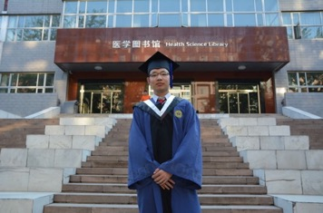

Tel: 181-51672683
Email：hanxu@addorcapital.com
毕业去向：
江苏毅达股权投资基金管理有限公司
教育经历：
2010.09-2014.07：北京大学医学部 药学 学士
2012.09-2014.07：北京大学 经济学 双学士学位
2014.09-2016.07：北京大学医学部 化学生物学 硕士，导师：周德敏 教授
研究领域：
五环三萜-唾液酸偶联物的合成及抗流感病毒机制研究
荣誉奖励：
张礼和院士浙江医药奖学金一等奖（2015）
发表论文：
1. Xu Han, Yongying Shi, Longlong Si, Zibo Fan, Han Wang, Renyang Xu, Pingxuan Jiao, Kun Meng, Zhenyu Tian, Xiaoshu Zhou, Hongwei Jin, Xinyu Wu, Hong Chen, Yongmin Zhang, Lihe Zhang, Sulong Xiao*, Demin Zhou*, Design, synthesis and biological activity evaluation of novel conjugated sialic acid and pentacyclic triterpene derivatives as anti-influenza entry inhibitors, MedChemComm, 2016, 7: 1932-1945
2. Xu Han,# Long-Long Si,# Yong-Ying Shi, Zi-Bo Fan, Shou-Xin Wang, Zhen-Yu Tian, Man Li, Jia-Qi Sun, Ping-Xuan Jiao, Fu-Xiang Ran, Yong-Min Zhang, De-Min Zhou and Su-Long Xiao, Synthesis and In Vitro Anti-Influenza Virus Evaluation of Novel Sialic Acid (C-5 and C-9)-Pentacyclic Triterpene Derivatives. Molecules, 2017, 22(7),1018
3. Yongying Shi,# Longlong Si,# Xu Han,# Zibo Fan, Shouxin Wang, Man Li, Jiaqi Sun, Yongmin Zhang, Demin Zhou and Sulong Xiao, Synthesis of novel pentacyclic triterpene-Neu5Ac2en derivatives and investigation of their in vitro anti-influenza entry activity. MedChemComm, 2017, 8, 1531-1541
4. 肖苏龙*, 王晗, 王琪, 韩旭, 徐仁洋, 孟坤, 田振宇, 张礼和, 周德敏*, 基于五环三萜先导结构的抗病毒抑制剂研究进展，中国科学: 化学, 2015, 45(9): 865-883
5. Yu F,* Wang Q, Wang H, Si L, Liu J, Han X, Xiao S, Zhang L, Zhou D.* Synthesis and biological evaluation of echinocystic acid derivatives as HCV entry inhibitors. Chin. Chem. Lett.; 2016, 27, 711-713
6. Han Wang,# Renyang Xu,# Yongying Shi, Longlong Si, Pingxuan Jiao, Zibo Fan, Xu Han, Xingyu Wu, Xiaoshu Zhou, Fei Yu, Yongmin Zhang, Lihe Zhang, Demin Zhou*, Sulong Xiao*. Design, synthesis and biological evaluation of novel L-ascorbic acid-conjugated pentacyclic triterpene derivatives as potential influenza virus entry inhibitors. Eur. J. Med. Chem.; 2016, 110, 376-388
7. Sulong Xiao,* Longlong Si, Zhenyu Tian, Pingxuan Jiao, Zibo Fan, Kun Meng, Xiaoshu Zhou, Han Wang, Renyang Xu, Xu Han, Ge Fu,Yongmin Zhang, Lihe Zhang, Demin Zhou*. Pentacyclic triterpenes grafted on CD cores to interfere with influenza virus entry: A dramatic multivalent effect. Biomaterials. 2016, 78: 74-85
